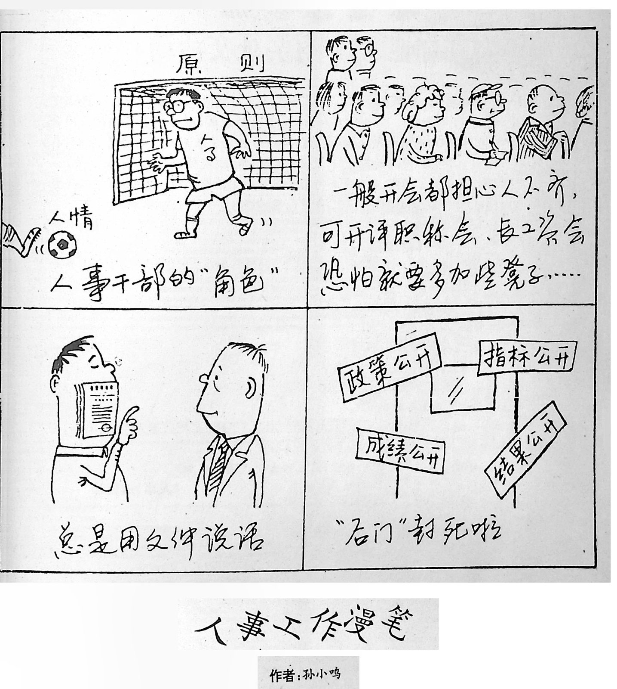

孙小鸣 《人事》1990年第11期（总第62期），封三
人事工作漫笔
Sketches of Personnel Work
- Text in the drawing
- 原则 / 人情 / 人事干部的“角色” / 一般开会都担心人不齐，可开评职称会、长工资会恐怕就要多加些凳子…… / 总是用文件说话 / 政策公开 / 指标公开 / 成绩公开 / 结果公开 / “后门”封死啦
Principle / Personal favour / The personnel cadre's “role” / Meetings usually worry about attendance, but for meetings on professional titles or pay rises you'd better add more benches… / Always speaking through documents / Policies public / Quotas public / Scores public / Results public / The “back door” is sealed shut - Panel text
- 原则 / 人情 —— 人事干部的“角色”
1. Principle / Personal favour — the personnel cadre's “role.” - 一般开会都担心人不齐，可开评职称会、长工资会恐怕就要多加些凳子……
2. Usually at meetings you worry not enough people will come, but for a meeting on assessing professional titles or raising wages you'd better put out extra benches… - 总是用文件说话
3. Always speaking through documents. - 政策公开 / 指标公开 / 成绩公开 / 结果公开 —— “后门”封死啦
4. Policies public / Quotas public / Scores public / Results public — the “back door” is sealed shut.
- 原则 / 人情 —— 人事干部的“角色”
- Description
- Four panels on personnel work: a personnel cadre keeps goal for “principle” against shots of “personal favour”; a hall overflows for a meeting on titles or pay; a cadre speaks only through the document held over his mouth; and a back door is boarded shut with notices making policies, quotas, scores and results public.
- Note
- Sun Xiaoming also drew the 漫画 box in 1988 no. 8. The last panel endorses the “open procedures” (公开) promoted in 1990 as a defence against back-door dealing.
- Artist
- Sun Xiaoming 孙小鸣
- Published in
- 《人事》1990年第11期（总第62期）, inside back cover
- Themes
- Paperwork and documents · Connections (guanxi) · Promotion · Reform and its implementation

Cite
Sun Xiaoming, “人事工作漫笔” [Sketches of Personnel Work], Renshi (Personnel) 《人事》, 1990, no. 11, inside back cover.